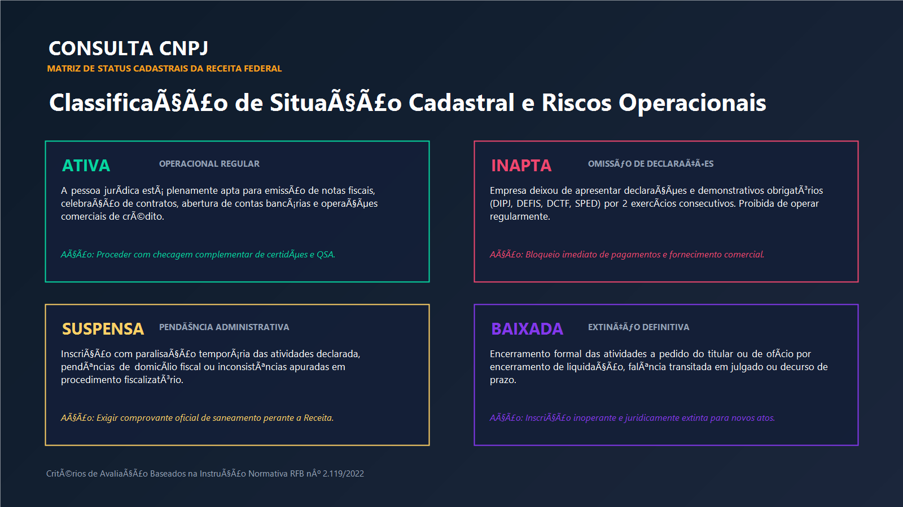
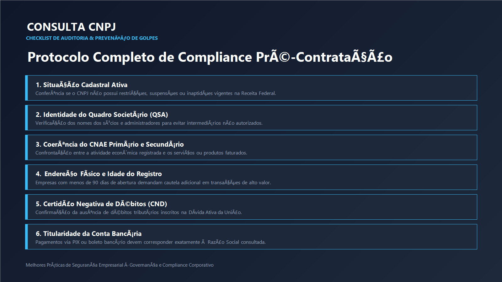

A correta verificação dos registros empresariais é a salvaguarda basilar de qualquer transação comercial no Brasil. A auditoria minuciosa da situação cadastral, das atividades econômicas declaradas e do quadro de sócios impede a celebração de contratos com empresas fantasmas, evita autuações fiscais por glosa de créditos tributários e previne o envolvimento involuntário em fraudes operacionais complexas.
Fundamentos Estruturais do Cadastro Nacional da Pessoa Jurídica
O Cadastro Nacional da Pessoa Jurídica, universalmente reconhecido pela sigla CNPJ, constitui a pedra angular da arquitetura regulatória e fiscal do ambiente de negócios brasileiro. Criado pelo Ministério da Fazenda por intermédio da Instrução Normativa SRF nº 82 de 1998, sucedendo ao antigo Cadastro Geral de Contribuintes, o sistema centralizou o controle sobre todas as entidades de direito privado, organismos públicos e agremiações domiciliadas ou com operações econômicas no território nacional. Sua administração executiva recai sob a jurisdição da Secretaria Especial da Receita Federal do Brasil, órgão dotado de competência legal para expedir normas infralegais, fiscalizar recolhimentos tributários e assegurar a autenticidade cadastral de mais de vinte milhões de empresas ativas no país.
A lógica de registro empresarial sob a égide do sistema unificado baseia-se na identificação irrevogável da personalidade jurídica mediante um identificador padrão composto por catorze caracteres organizados na estrutura clássica de oito dígitos basilares, quatro dígitos de classificação de estabelecimento e dois dígitos de verificação algorítmica. Os oito primeiros caracteres compõem o número-base da matriz empresarial, sendo compartilhados de forma invariável por todas as filiais e sucursais pertencentes ao mesmo conglomerado ou sociedade. Os quatro dígitos intermediários discriminam pontualmente a ordem do estabelecimento, reservando-se historicamente a terminação quatro zeros um para a sede matriz e sequenciais sucessivos para os entrepostos subordinados. Por fim, os dois últimos caracteres encerram o mecanismo estocástico de validação por módulo onze, criado para barrar imediatamente inconsistências tipográficas e tentativas rudimentares de forja numérica em formulários eletrônicos.
A relevância jurídica do ato de cadastramento transcende a mera atribuição de uma matrícula numérica para fins de recolhimento de tributos federais como Imposto de Renda das Pessoas Jurídicas, Contribuição Social sobre o Lucro Líquido, PIS e COFINS. A inscrição no sistema fiscal federal consubstancia a certidão de nascimento comercial da sociedade, habilitando-a perante o sistema bancário para abertura de contas de titularidade corporativa, celebração de contratos mercantis sujeitos ao Código Civil e ao Código de Processo Civil, aquisição de ativos patrimoniais registrados em serventias imobiliárias e contratação formal de mão de obra sob o regramento da Consolidação das Leis do Trabalho. Uma empresa desprovida de cadastro ou cuja inscrição encontre-se eivada de vícios insolúveis permanece em estado de irregularidade formal, acarretando responsabilidade ilimitada e solidária aos seus administradores de fato.
Diferenciação Técnica entre Consulta Rápida e Comprovante de Inscrição
No cotidiano dos departamentos fiscais, de compras e de conformidade legal, observa-se frequentemente uma confusão terminológica entre os conceitos de consulta cadastral informativa e o Comprovante de Inscrição e de Situação Cadastral formal, comumente batizado no jargão administrativo como Cartão CNPJ. Embora ambos os instrumentos emanem dos mesmos servidores de dados geridos pelo Serviço Federal de Processamento de Dados, suas finalidades procedimentais e eficácias probatórias distinguem-se em aspectos de alta relevância jurídica.
A consulta expedita consiste em uma extração sintética e dinâmica dos dados públicos cadastrados, sendo comumente consultada para fins de triagem primária, preenchimento automatizado de cadastros de clientes em sistemas de ERP e conferência preliminar de dados de cobrança antes da emissão de ordens de serviço. Por sua natureza ágil e visualmente simplificada, ela permite que analistas de crédito verifiquem instantaneamente se a razão social confere com a proposta comercial apresentada, sem exigir protocolos rígidos de certificação digital ou armazenamento solene.
Em contrapartida, o Comprovante de Inscrição e de Situação Cadastral emitido oficialmente com carimbo cronológico, chave criptográfica de conferência e chancela de autenticidade constitui o documento oficial exigido em licitações públicas sob as diretrizes da Lei nº 14.133 de 2021, em processos judiciais de execução por quantia certa, em pedidos de abertura de linhas de financiamento perante instituições financeiras bancárias e na lavratura de escrituras públicas em tabelionatos de notas. O comprovante oficial registra com exatidão matemática o instante da consulta, fixando para todos os efeitos a situação de regularidade ou irregularidade do contribuinte naquele momento temporal específico, gerando a presunção legal de boa-fé em prol do adquirente de bens ou serviços.
Para realizar consultas instantâneas e verificar a situação atualizada perante a base oficial da Receita Federal, utilize a plataforma especializada acessível em:
Taxonomia e Efeitos Práticos dos Status Cadastrais
O arcabouço normativo estabelecido pela Instrução Normativa RFB nº 2.119 de 2022 estabelece com rigor milimétrico as hipóteses taxativas sob as quais uma inscrição jurídica pode ser enquadrada no território nacional. Ao contrário do que presume o senso comum leigo, uma empresa não se encontra meramente dividida entre aberta ou fechada. A legislação tributária brasileira contempla cinco situações cadastrais distintas, cada qual revestida de consequências patrimoniais, operacionais e tributárias específicas para a sociedade e para terceiros contratantes.
| Classificação Cadastral | Origem Administrativa | Eficácia Operacional | Repercussão para Terceiros |
|---|---|---|---|
| Ativa | Inscrição regular sem impedimentos sancionatórios identificados pela fiscalização. | Plena capacidade para faturar, firmar convênios, participar de concorrências e movimentar contas. | Contratação permitida com emissão válida de documentos fiscais e aproveitamento de créditos. |
| Inapta | Omissão reiterada na entrega de declarações fiscais obrigatórias por dois exercícios. | Bloqueio de autorização para emissão de notas fiscais e suspensão de incentivos tributários. | Risco severo de inidoneidade documental, glosa de créditos e nulidade de negócios jurídicos. |
| Suspensa | Solicitação de baixa pendente, domicílio não localizado ou procedimento administrativo em curso. | Operações limitadas à liquidação de obrigações precedentes, vedada a expansão comercial. | Exige apresentação imediata de garantias e verificação detalhada das causas motivadoras. |
| Baixada | Extinção formal aprovada por distrato social, liquidação voluntária ou falência decretada. | Cessação irreversível da personalidade jurídica para a realização de novos atos mercantis. | Atos praticados após a baixa consideram-se nulos de pleno direito perante a ordem jurídica. |
A Situação Ativa e a Falsa Sensação de Segurança Irrestrita
A constatação de que determinado CNPJ ostenta o status de Ativa é indispensável, porém insuficiente para chancelar com segurança total uma transação comercial vultosa. O status ativo apenas atesta que a empresa cumpre a rotina mínima de entrega de informativos e não foi alcançada por sanções extremas de cancelamento administrativo. Entretanto, uma inscrição plenamente ativa pode ocultar passivos tributários astronômicos inscritos na Dívida Ativa da União perante a Procuradoria-Geral da Fazenda Nacional, protestos cambiais em dezenas de tabelionatos de protesto de títulos, ações de execução trabalhista em fase de penhora e descompasso flagrante entre o objeto social registrado e os serviços efetivamente contratados.
A Condição de Inaptidão e as Sanções da Lei Federal
Dentre as anomalias cadastrais que mais demandam prudência nas relações entre fornecedores e contratantes, sobressai a declaração de inaptidão prevista no artigo octogésimo primeiro da Lei nº 9.430 de 1996. Uma empresa é compulsoriamente declarada inapta quando omite a apresentação de demonstrativos e declarações fiscais essenciais por dois anos consecutivos, tais como a Escrituração Contábil Fiscal, a Declaração de Débitos e Créditos Tributários Federais e a Declaração de Informações Socioeconômicas e Fiscais aplicável ao Simples Nacional.
As repercussões decorrentes da inaptidão são severas e imediatas. A pessoa jurídica nessa condição perde sumariamente o direito de emitir documentos fiscais eletrônicos válidos. Caso uma entidade inapta consiga gerar uma nota fiscal de forma irregular, o documento é considerado inidôneo pelo fisco estadual e federal. Consequentemente, o cliente que adquire produtos amparados por tais notas sofrerá a autuação direta pela fiscalização com a glosa sumária dos créditos de ICMS, PIS e COFINS anteriormente apropriados, acrescida de multa punitiva que frequentemente atinge percentuais escorchantes sobre o valor total da operação.
Atenção redobrada: Negociar com pessoa jurídica declarada inapta pela Receita Federal acarreta a presunção legal de inidoneidade dos documentos fiscais recebidos. As despesas lançadas na contabilidade podem ser desconsideradas para fins de apuração do lucro real, majorando substancialmente o montante devido de IRPJ e CSLL da sua própria empresa.
A Inscrição Suspensa e Suas Peculiaridades Processuais
A suspensão cadastral constitui um estágio intermediário no qual a autoridade tributária identifica irregularidades que impedem a continuidade normal das atividades, mas que ainda comportam esclarecimento ou regularização por parte do contribuinte. Entre os motivos mais recorrentes para a suspensão situam-se a não confirmação do domicílio tributário mediante recusa de recebimento de notificações postais, indícios de interposição fraudulenta de terceiros os famigerados laranjas ou a tramitação de pedidos de baixa voluntária que aguardam liquidação de passivos vinculados.
A Baixa Registrada e o Fim da Personalidade Jurídica
A situação cadastral baixada expressa a certidão de óbito da pessoa jurídica no ecossistema fiscal da União. Ela pode advir do encerramento voluntário deliberado pelos titulares através de distrato arquivado na Junta Comercial ou Cartório de Registro Civil das Pessoas Jurídicas, do término do processo de liquidação judicial por insolvência ou falência, ou de procedimento sumário de ofício após cinco anos ininterruptos em estado de inaptidão. Nenhuma entidade baixada possui aptidão jurídica para outorgar procurações ad negotia, assinar contratos de locação ou alienar bens de seu acervo remanescente sem prévia autorização judicial expressa.

Análise Qualitativa do Quadro de Sócios e Administradores
Um dos elementos mais estratégicos revelados pela consulta pública é o Quadro de Sócios e Administradores, consagrado pela abreviatura QSA. A dissecação criteriosa do QSA transcende a mera conferência nominal dos titulares da sociedade, constituindo uma etapa primordial de governança corporativa, conformidade antilavagem de capitais e mitigação de responsabilidade subsidiária em passivos contratuais.
O primeiro ponto a ser observado no QSA refere-se à qualificação atribuída a cada componente da sociedade. Nem todo sócio ostenta poderes de representação ativa para obrigar a empresa perante terceiros. A legislação societária brasileira traça distinções profundas entre o sócio quotista simples, o sócio ostensivo, o administrador não sócio e o procurador com poderes expressos outorgados por instrumento público. Se um contrato de fornecimento for assinado por um titular que figura nos assentamentos da Receita exclusivamente como sócio cotista desprovido de funções executivas, a empresa contratada poderá posteriormente invocar a teoria da aparência ou a nulidade do instrumento por excesso de poder, frustrando a cobrança célere de dívidas.
Adicionalmente, a verificação do quadro societário permite cruzar vínculos de parentesco, participações cruzadas em redes empresariais e investigar a existência de grupos econômicos de fato. É prática comum em esquemas fraudulentos a criação de empresas satélites sob a liderança de pessoas interpostas desprovidas de patrimônio próprio, utilizadas para concentrar passivos trabalhistas e fiscais, enquanto as receitas líquidas são drenadas para corporações operacionais limpas. A identificação tempestiva desses arranjos no momento da consulta cadastral previne o contágio jurídico da sua empresa por alegações de conluio ou fraude contra credores.
Validação do Enquadramento nas Atividades Econômicas
A Classificação Nacional de Atividades Econômicas, amplamente denominada pela sigla CNAE, representa o código padronizado instituído pelo Instituto Brasileiro de Geografia e Estatística para classificar as operações mercantis e prestacionais desempenhadas pelas corporações brasileiras. Toda inscrição no CNPJ obrigatoriamente vincula um código de CNAE principal correspondente à sua atividade motriz geradora de maior receita e pode associar dezenas de códigos secundários abrangendo linhas subsidiárias de produção ou comercialização.
A discrepância entre o serviço ou fornecimento contratado e o CNAE constante da ficha cadastral na Receita Federal deflagra severos reflexos tributários. Em primeiro lugar, a emissão de notas fiscais descrevendo serviços alheios àqueles autorizados no cadastro econômico municipal ou estadual sujeita a empresa à retenção indevida ou em alíquota descompassada de tributos como o Imposto sobre Serviços de Qualquer Natureza. Em segundo lugar, empresas optantes pelo regime do Simples Nacional que exercem na prática atividades vedadas pelos anexos da Lei Complementar nº 123 de 2006 podem sofrer exclusão retroativa desse sistema simplificado, transferindo para seus clientes o dever de comprovar a regularidade dos recolhimentos incidentes sobre a folha de salários.
Sob a ótica do direito do trabalho e da segurança ocupacional, o código de atividade principal determina igualmente o grau de risco da sociedade, influenciando diretamente o cálculo da alíquota do Seguro de Acidente do Trabalho e o enquadramento sindical compulsório dos empregados. A constatação prévia da exata correspondência entre as mercadorias transacionadas e o objeto social inscrito no CNPJ afasta discussões acaloradas sobre simulação de operações ou desvio de finalidade societária.
Protocolos de Due Diligence e Prevenção contra Fraudes
O advento de plataformas digitais de negociação e o dinamismo do comércio eletrônico corporativo impuseram desafios monumentais aos padrões tradicionais de segurança patrimonial. Golpes estruturados com o uso indevido de nomes corporativos consolidados e a proliferação de boletos fraudados tornaram a checagem cadastral um imperativo de sobrevivência financeira. Para salvaguardar sua organização contra prejuízos irreparáveis, recomenda-se a execução metódica de um roteiro investigativo estruturado em parâmetros verificáveis.

Rastreamento da Antiguidade do Registro
A data de abertura estampada no topo do cadastro constitui o primeiro termômetro de confiabilidade. Empresas formalizadas há menos de noventa ou cento e vinte dias que repentinamente surgem oferecendo propostas mirabolantes de fornecimento com descontos desproporcionais ou exigindo antecipações volumosas de numerário exigem rigor redobrado. Embora novos empreendimentos nasçam diariamente com legítimas pretensões mercadológicas, organizações criadas sob encomenda para aplicação de fraudes pontuais raramente acumulam histórico temporal prolongado antes de encerrarem suas atividades criminosas de maneira abrupta.
Confrontação Geográfica do Domicílio Fiscal
A conferência do endereço declarado perante o cadastro da Receita Federal deve ser confrontada com ferramentas de visualização geográfica por satélite e registros em guias comerciais. Não são raros os episódios em que consultas revelam sedes registradas em terrenos baldios, galpões abandonados ou imóveis estritamente residenciais que em nada condizem com indústrias pesadas, distribuidores químicos ou grandes operadoras logísticas. A verificação do endereço é também vital para delimitar a competência territorial em eventuais ações judiciais de cobrança ou cobrança de garantias contratuais.
Cruzamento de Titularidade em Instrumentos de Liquidação Financeira
Uma das vulnerabilidades mais exploradas no ecossistema corporativo atual envolve a divergência entre a identidade cadastrada e o beneficiário final do pagamento. Ao liquidar boletos de cobrança ou emitir transferências instantâneas via Sistema de Pagamentos Instantâneos, é dever inafastável do departamento de contas a pagar certificar-se de que a Razão Social e a raiz numérica do CNPJ exibidos na tela de confirmação bancária guardam total paridade com os dados auferidos na consulta oficial. O redirecionamento de fundos para contas de terceiros desvinculados do quadro societário sob o pretexto de antecipação de recebíveis por factoring não comunicada formalmente é a gênese de expressiva parcela das perdas patrimoniais decorrentes de golpes de engenharia social.
A Evolução Rumo ao Formato Alfanumérico e Suas Implicações
O contínuo crescimento do ecossistema empresarial nacional e a proliferação vertiginosa de cadastros motivada pelo microempreendedorismo individual aproximaram a base numérica tradicional de seu limite físico de combinações matemáticas. Diante desse cenário de esgotamento probabilístico, a Receita Federal do Brasil promulgou as diretrizes técnicas que disciplinam a transição histórica do formato puramente numérico para o sistema alfanumérico estruturado.
Nesse novo modelo, os catorze caracteres serão preservados em sua totalidade de extensão para garantir a retrocompatibilidade visual com contratos e formulários legados. Todavia, os blocos identificadores passarão a admitir caracteres alfabéticos combinados a algarismos arábicos em posições pré-determinadas, ampliando a capacidade combinatória de dezenas de milhões para trilhões de combinações viáveis. A introdução de letras nas raízes e dígitos de filial exigirá profunda modernização nos bancos de dados corporativos, rotinas de validação de campo em formulários web, sistemas de emissão de Documentos Fiscais Eletrônicos e rotinas de conciliação bancária que atualmente empregam máscaras restritivas programadas unicamente para capturar números inteiros.
Para contadores, auditores fiscais e diretores de tecnologia da informação, a transição demandará atualizações imediatas em scripts de extração de dados e adaptadores de integração via interfaces de programação de aplicações. Plataformas que dependem do antigo algoritmo de módulo onze ajustado a matrizes numéricas simples necessitarão de recodificação para comportar o cálculo sobre valores de tabela ASCII expandida, assegurando que as rotinas de verificação automatizada continuem funcionando sem falsos positivos ou rejeições indevidas de cadastros perfeitamente lícitos.
Aspectos Jurídicos da Publicidade Registral e a Lei Geral de Proteção de Dados
A tensão aparente entre o princípio da publicidade dos registros comerciais e a imperatividade da Lei Geral de Proteção de Dados Pessoais, veiculada pela Lei nº 13.709 de 2018, suscita frequentes debates entre operadores do direito e especialistas em segurança da informação. Afinal, a disponibilização pública de nomes de sócios, participações e endereços corporativos não violaria a tutela de intimidade dos cidadãos vinculados às sociedades?
A doutrina jurídica dominante e os precedentes dos tribunais superiores pacificaram o entendimento de que a atividade empresarial desempenha uma função social indelegável que exige transparência irrestrita perante a coletividade. O artigo sétimo da Lei Geral de Proteção de Dados expressamente legitima o tratamento e a publicização de dados públicos quando necessários para o cumprimento de obrigação legal ou regulatória pelo controlador, bem como para o exercício regular de direitos em processos judiciais, administrativos ou arbitrais. A segurança do mercado de consumo, a salvaguarda da higidez do crédito e a repressão a condutas criminosas sobrepõem-se ao sigilo individual dos dirigentes de organizações com fins econômicos.
Contudo, a autoridade tributária federal implementou mecanismos de equilíbrio para resguardar a integridade física e o patrimônio dos cidadãos. Na exibição pública das consultas do QSA, os dígitos intermediários do Cadastro de Pessoas Físicas pertencentes aos administradores aparecem parcialmente truncados por asteriscos de segurança, preservando apenas as pontas necessárias para distinguir homônimos em pesquisas cadastrais especializadas. Essa solução harmoniza a publicidade registral indispensável à segurança dos negócios com a tutela contra usurpações de identidade pessoal.
Procedimentos Operacionais Recomendados para Escritórios e Empresas
A estruturação de uma rotina corporativa resiliente não pode depender do empirismo isolado ou do improviso de colaboradores sobrecarregados. Organizações que prezam pela longevidade de suas marcas e solidez de seus balanços instituem procedimentos padronizados de governança que regulam desde o cadastramento inicial até a renovação periódica de credenciamentos com parceiros de negócios.
Em primeiro lugar, sugere-se a fixação de uma política interna que determine a renovação da consulta cadastral de todos os fornecedores homologados a cada noventa ou cento e oitenta dias. A saúde cadastral de uma empresa é fluida e sujeita a transformações drásticas: uma corporação que operava em total regularidade no mês de janeiro pode sucumbir à inaptidão em outubro em virtude de disputas judiciais internas que paralisaram a entrega de suas obrigações fiscais perante o Fisco Federal. Confiar cegamente em um comprovante impresso arquivado há dois anos em pastas físicas de compras é assumir riscos desnecessários de natureza ruinosa.
Em segundo lugar, recomenda-se a criação de um dossiê eletrônico estruturado para cada fornecedor estratégico, contendo a consulta da Receita Federal, as certidões negativas de débitos tributários federais expedidas conjuntamente pela RFB e pela PGFN, as certidões estaduais e municipais de regularidade de tributos diretos e indiretos, a certidão negativa de débitos trabalhistas emitida pela Justiça do Trabalho e a certidão de regularidade do Fundo de Garantia do Tempo de Serviço perante a Caixa Econômica Federal. A reunião cumulativa desses atestados confere tese probatória irrefutável de boa-fé em caso de litígios fiscais promovidos por órgãos de auditoria externa.
Perguntas Frequentes sobre Auditoria e Verificação Cadastral
A consulta pública no cadastro federal acarreta custos para o solicitante?
O acesso às informações cadastrais mantidas sob custódia direta do poder público é absolutamente gratuito, sendo garantido pelo princípio da publicidade administrativa positivado no artigo trinta e sete da Constituição Federal. Ferramentas digitais independentes de consulta de CNPJ consolidam essas fontes oficiais sem impor cobranças aos usuários, viabilizando análises ágeis e acessíveis a qualquer cidadão ou analista de negócios.
Existe identidade conceitual entre CNPJ matematicamente válido e inscrição ativa?
A resposta técnica é categoricamente negativa. A validade matemática significa tão somente que os catorze caracteres obedecem à fórmula ponderada dos dígitos verificadores calculados pelo algoritmo do módulo onze. Um número perfeitamente válido do ponto de vista aritmético pode pertencer a uma empresa extinta há mais de duas décadas, cancelada por fraude estruturada ou baixada por liquidação judicial definitiva. A validade algorítmica é apenas o estágio preliminar que precede a checagem da situação cadastral real perante os servidores governamentais.
Qual é o prazo legal de eficácia atribuído ao comprovante cadastral impresso?
A legislação federal não estabelece uma data de validade peremptória estampada no comprovante emitido pela Receita Federal, pois o documento reflete com exatidão irrevogável o estado fático e jurídico verificado no instante exato de sua expedição. Entretanto, por imperativo de prudência e em consonância com as práticas consolidadas do sistema bancário, de juntas comerciais e de comissões de contratação pública, convencionou-se admitir como dotados de contemporaneidade válida comprovantes emitidos dentro de uma janela temporal que varia entre trinta e noventa dias contados da data de sua geração.
É viável localizar o registro de um CNPJ dispondo unicamente da razão social?
A base de dados pública da Receita Federal estruturada para consultas convencionais exige a inserção exata dos catorze dígitos da inscrição como chave primária de pesquisa. Todavia, pesquisas conduzidas nos portais das Juntas Comerciais dos estados de registro, consultas a publicações em diários oficiais e pesquisas em repositórios abertos de dados empresariais viabilizam a localização do número de registro a partir da razão social formal ou da denominação de nome fantasia amplamente disseminada no mercado.
O que deve ser feito se a empresa contratada estiver com a inscrição suspensa?
A constatação de suspensão cadastral impõe a interrupção prudencial imediata de qualquer liberação de recursos financeiros, concessão de crédito mercantil ou assinatura de novos aditivos contratuais. O departamento jurídico deve notificar a entidade parceira para que apresente, em prazo razoável, a certidão circunstanciada expedida pela delegacia da Receita Federal de sua jurisdição esclarecendo a motivação do ato suspensivo e demonstrando a interposição tempestiva dos recursos administrativos de saneamento cabíveis.
Considerações Finais sobre Governança e Transparência nos Negócios
A higidez do mercado econômico brasileiro apoia-se visceralmente na publicidade dos registros corporativos e na diligência técnica exercida pelos seus agentes econômicos. Em um ecossistema complexo marcado por minúcias regulatórias, volatilidade tributária e constantes inovações no desenho de obrigações acessórias, a prática sistemática de consulta de CNPJ deixa de ser um mero ato de rotina burocrática para alçar o patamar de elemento central de integridade, planejamento tributário e segurança jurídica patrimonial.
Ao incorporar protocolos inflexíveis de averiguação cadastral, confrontar minuciosamente os dados declarados com a realidade fática das operações mercantis e resguardar evidências documentais contemporâneas aos negócios celebrados, os gestores empresariais blindam suas companhias contra passivos ocultos, elevam os índices de governança corporativa e contribuem de forma decisiva para a edificação de um ambiente de negócios mais transparente, seguro e próspero em todo o território nacional.